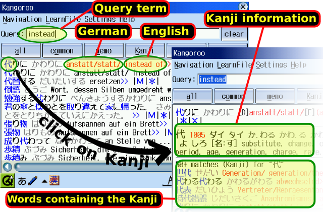

Go directly to the downloads
Description
This is a Japanese to English or German+English dictionary software (extendible to other languages) with the following additional functions.
1. You can click on Kanji, this gives you information about the Kanji and a list of words containing the Kanji. "Jumping" from one Kanji to another helps you to learn meaning and readings.
2. You can memorize words and produce your own learn file. The dictionary reflects your actual vocabulary knowledge and becomes your repetition assistant.
3. (new in v0.8) Kanji are displayed graphically segmented into their "building blocks". Jumping between the building blocks helps to memorize the Kanji. Moreover, keywords can be assigned to Kanji and building blocks, in order to further facilitate memorization.
4. Training ("flash card") function: Kangoroo contains different Vocabulary and Kanji trainers.
Kangoroo also provides "DEDict", a Japanese to German+English dictionary compiled from EDict (due to Jim Breen) and WaDoku (due to Ulrich Apel).
Kangoroo uses indexes (hash files) for fast search. Currently available indexes are for "DEDict" and for EDict (Japanese-English, Jim Breen). Perl scripts for generating indexes for other dictionaries are available below.
Dictionaries
Currently, two dictionaries are available for Kangoroo:
- EDict, Version January 2007, due to Jim Breen
- DEDict, a combination of
- WaDoku, Version November 2006, due to Ulrich Apel, and
- EDict, Version January 2007, due to Jim Breen
The dictionaries are combined with
KanjiDic, based on Jim Breen's KanjiDic, but shortened in
order to improve readability on Sharp Zaurus
Screenshots
Kangoroo v0.8 on the Sharp Zaurus (with German+English dictionary DEDict), a Kanji page and keyword dialog

Old version with annotations: Kangoroo v.5 on the Sharp Zaurus, demonstrating a query ("instead") and a click on the Kanji.
What's new
- v0.5 (June 2006) initial version,
- v0.55 (July 2006) font size is now adjustable, small bugfixes
- v0.8 (January 2007) Kanji segmentation is included
- v1.0 (February 2007) Dictionary update, small bugfixes
- v1.01 (February 2007) small bugfixes
UPDATE WARNING: If you install the new Kangoroo v1.01 or v1.0 over an old version (up to 0.8), the learn file will
be matched to the new dictionary the first time you start the software. This is supposed to automatically match
most of the entries correcty, but there may be some entries that cannot be matched (in particular those being Kana only
in the previous dictionary). Those entries will be displayed
and can be processed manually afterwards. Anyway,
it is advisable to backup your learn file(s) before updating. Also,
be prepared that the update process may take some minutes, according to the length of
your learn file, especially on the slow Zaurus.
Kangoroo runs on a Sharp Zaurus or on a PC with Linux or Windows XP (and maybe older versions, see the
problems section).
The software can be easily compiled for other Unix systems with QT 3.x.
Kangoroo should also compile on MAC with QT 3.x .
You need Japanese fonts and a Japanese input method installed to your system.
Moreover, you need QT 3.x. or Qtopia (Sharp Zaurus).
The Japanese-German+English dictionary plus indexes (DEDict) need about 55 MB disk space, the Japanese-English dictionary plus indexes about 15 MB.
Download one of the following Kangoroo versions and install it (see the README file if necessary):
- Sharp Zaurus, English dictionary (EDict), if you have enough space on /usr/local (this applies
for instance if your Zaurus has a hard disk, such as SLC-3100 or SLC-3200):
kangoroo_edict+kpic_1.01_arm.ipk.
Alternative: In case this package does not install correctly for some reason (it may be too large in certain cases), download and install the following two packages instead:
kangoroo_edict_1.01_arm.ipk and
kangoroo-kpic_1.01_arm.ipk. The first package contains the software and runs also stand-alone, the second one the Kanji pictures.
- Sharp Zaurus, German+English dictionary (DEDict), if you have enough space on /usr/local (this applies for instance if your Zaurus has a hard disk, such as SLC-3100 or SLC-3200)
kangoroo_dedict+kpic_1.01_arm.ipk.
Alternative: In case this package does not install correctly for some reason (it may be too large in certain cases), download and install the following two packages instead:
kangoroo_dedict_1.01_arm.ipk and
kangoroo-kpic_1.01_arm.ipk. The first package contains the software and runs also stand-alone, the second one the Kanji pictures.
- Sharp Zaurus, if you do not have enough space on /usr/local (for instance if your Zaurus has no hard disk, such as SLC-1000, and you have not configured an SD/CF card in order to provide additional memory on /usr/local), download
kangoroo_1.01_arm_sd.ipk or
kangoroo_1.01_arm_cf.ipk, depending on if you want to install the
resources on SD or CF card. In this case, you also need one of the following
two resource packages.
Unpack the resource package to your SD/CF card, making sure that the SD/CF card contains a directory kangoroo
afterwards.
- Microsoft Windows, English dictionary (EDict),
kangoroo_edict_1.01_win.exe. In case QT is not installed, you also need
qt3_dll.exe.
- Microsoft Windows, German+English dictionary (DEDict),
kangoroo_dedict_1.01_win.exe. In case QT is not installed, you also need
qt3_dll.exe.
- Linux, precompiled
Available binaries:
The binaries perhaps work on other systems - in case they don't, please compile the source.
You also need one resource package
Then, EITHER (installation only for your user)
- unpack everything to your home directory (i.e. all files will be written to ~/kangoroo)
- create a directory ~/kangoroo-learn
- start the program by typing "~/kangoroo/bin/kangoroo" (or create a symbolic link)
OR (you need write permissions to /usr/local for this)
- unpack everything to /usr/local (i.e. all files will be written to /usr/local/kangoroo)
- execute "cd /usr/local/kangoroo; ./install.sh"
Please make sure that Qt3 is installed.
Note: You may install kangoroo to different places than /usr/local, just replace /usr/local
by a directory of your choice. If you want to install the binary to a different place than
/usr/local/bin, invoke "./install.sh /path/to/binary"
- Installation from source Download
kangoroo_1.01_source.tar.bz2. You also need one resource package
Unpack kangoroo_1.01_source.tar.bz2 and run build-qt, build-qt-win, or build-qpe, depending on if you want to compile it for Qt, Qt on Windows,
or Qtopia (Sharp Zaurus).
Install the program as described above for Linux:
- unpack the resources to to /usr/local (i.e. all files will be written to /usr/local/kangoroo)
- copy the binary "kangoroo" to /usr/local/kangoroo/bin
- execute "cd /usr/local/kangoroo; ./install.sh" (use this only for Unix/Linux)
Please make sure that Qt3 (including the header files, i.e. the "development package") is installed.
How to
- Using several learn files on one user account
Create different learn files in the learn file directory, e.g. by placing empty files there.
The learn file directory is usually
- on Windows: the subdirectory kangoroo-learn in the Kangoroo installation directory
- on Linux or Zaurus: the directory ~/kangoroo-learn
- in case ~.kangoroo or kangoroo.cnf exists: the second line of this file point to the learn file directory
- Installing more dictionaries (other languages)
download the perl scripts for creating indexes,
kangoroo_1.01_indexscripts.tar.bz2 and see the README file
Note: Building indexes is a little time-consuming (can take hours on a slow PC)
Note: The scripts have been tested under Linux. Maybe they also run under Windows, however
you definitely have to add a "binmode(file)" to each open file command, and you have to
may want to create a batch file buildindexes.bat . Also, you need the "wc" (word count) program.
New: My perl scripts for merging EDict and Wadoku in order to obtain DEDict are
available: kangoroo_1.01_makedic.tar.bz2
- Customizing the KanjiDic
You can customize the KanjiDic, in particular in order to display more information
and use a different index from Heisig. To this aim,
download the perl scripts for creating indexes,
kangoroo_1.01_indexscripts.tar.bz2 and see the README file
- The configuration file
Kangoroo uses a configuration file, which is
~/.kangoroo under Linux/Unix/Zaurus and
<windows directory>\kangoroo.cnf under Windows.
This file contains two lines:
- the first line is the absolute (or relative) path to the resource directory,
- the second line is the absolute (or relative) path to the learn directory.
The paths need to end with a tralining (back)slash!
Please do not use the "~" symbol for the paths.
If there are different users on your system, you can adjust the installation
such that each user gets his own configuration file and therefore his own
learn directory (this is default for the Linux installation, for Windows you
have to do this manually).
Credits
The Kangoroo software is only a small part of the whole! Many thanks to the authors and maintainers of the dictionaries, who have made this project possible
Jim Breen, author of EDict (Japanese-English dictionary)
Ulrich Apel, author and coordinator of WaDoku (Japanese-German dictionary)
and all other contributors to the dictionaries!
Many thanks also to
James Heisig who proposed to segment Kanji in order to memorize them
Anne Poland who did the present segmentation.
License
- Kangoroo is provided under the GNU GPL license v2. This means that modification and/or redistribution of the whole software or parts is permitted, provided that the result is again GPL. This holds in particular for the segmentation of the Kanji, which is due to Anne Poland and Jan Poland.
- EDICT and KANJIDIC are Creative Commons Attribution-ShareAlike Licence, please
see the license at Jim
Breen's page or the file dict-license.html provided with the complete
package.
- WaDoku is copyright and may be used in free software products (such as Kangoroo), please
see the license at the WaDoku page or the file
WaDokuDatai_Lizenz.html provided with the complete package.
If you download the software, please see the license files for details!
- QT has been reported to work on Windows 98/ME, however Kangoroo seems not to work
- Kangoroo has not been tested on Windows 2000 or NT
- Kangoroo has not yet been compiled for MacOS: If you do so I would be glad if you drop me a line!
Why that name, "Kangoroo"? This name has two meanings. One relates to the animal and comes from the main feature of of "jumping" from one Kanji to another. The other one is hidden in the Japanese writing, just find out yourself, e.g. by installing and trying the program...